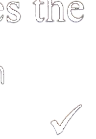

第四部分Part IVЧасть IV
第19—20题：选择正确答案。Questions 19-20: Choose the correct answer for each question.Вопросы 19-20: Выберите правильный ответ на каждый вопрос.
Qǐngwèn xiànzài jǐ diǎn le?例如： 请问 现在 几 点 了？
Excuse me, what time is it now?Простите, который сейчас час?★说话人 想 知道 什么？
What does the speaker want to know?Что хочет знать говорящий?shíjiānA 时间
timeвремяmíngziB 名字
nameимяfángjiānhàoC 房间号
room numberномер комнаты我 没有 手机， 今天 想 去 商店 买 一个。
У меня нет телефона, сегодня хочу пойти в магазин и купить.★说话人 想 买 什么？
Что хочет купить говорящий?bēiziA 杯子
A чашкаshǒujīB 手机
B телефонshuǐguǒC 水果
C фрукты这 件 衣服 很 好看， 你 也 能 穿， 买 一 件 吧。
Эта одежда очень красивая, ты тоже можешь носить, купи одну.★那 件 衣服：
Та одежда:hǎokànA 好看
A красиваяpiányiB 便宜
B дешёваяhěn guìC 很 贵
C очень дорогая